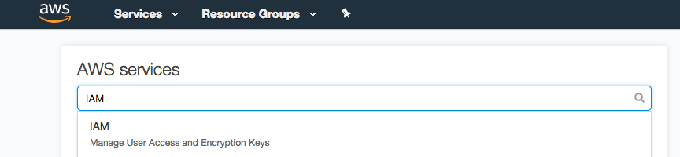

13 Cloud Computing Services
- What if my data files are too big to hold in Github?
- Where is the latest IUCN/MODIS/LANDSAT shapefile?
- What if I need more CPUs than even our servers have?
EHA has an organizational Amazon Web Services and Microsoft Azure accounts that may be useful for some projects. AWS S3 storage or Azure Blog Storage are useful for hosting large data files, especially if they are shared across projects. AWS EC2 cloud computers or Azure Virtual Machines may be appropriate for a hosting a web app or database, automating regular processes, or other analytical projects.
If you think you need cloud resources for your project, contact Noam or Robert Young for access to the AWS account, to discuss what services or other providers may be useful.
If you are using AWS, remember:
- All resources used on AWS need to be tagged with a project:PROJECTNAME tag in order to assign costs to the appropriate EHA projects.
- Be judicious with AWS service usage. It is easy to run up costs.
13.1 Setting up Amazon Credentials
To connect to AWS via program like R, you will net to set up an access access credientials.
Once you’ve gotten your credentials, log on to ehatek.signin.aws.amazon.com/console/. ehatek should be already entered in the “Account ID or alias” field. You will be asked to change your password after the first time you log on.
13.1.1 Generate an access key
Navigate to your IAM (Identity and Access Management) page to generate an access key.

You should see a ✅ next to “rotate your access keys.” Click “Manage User Access Keys” after expanding the access key subheading. (If you see an ❌, ask whoever created your account if you have the appropriate S3 privileges.)

Click the “Security credentials” panel and scroll down to the “create access key” button.

Your access key will have a key ID - a long string of letters and numbers - and a *~*secret*~* access key - a longer string of letters and numbers. Press “show” and hang onto it somewhere until you are sure your ~/.aws/credentials file is working as intended. Don’t share your secret key with anyone.
If you lose it before you use it, you can delete your and make another one. Deleting a key is different from making a key inactive - you might reach your access key limit pretty quickly, so you’ll probably have to do the former if you have keys that you don’t use.
13.1.2 Create a credentials file
Open a blank text file in a text editor and paste your key ID and secret key as follows. It will look like this:
[default]
aws_access_key_id = your_key_id
aws_secret_access_key = your_secret_access_key
aws_default_region = us-east-1"Replace your_key_id and your_secret_access_key with the values you see in the AWS browser.
Create a folder called ~/.aws, and put the credentials file in it.
(YES, currently, you need that trailing " after us-east-1 if you want to include the AWS_DEFAULT_REGION in your credentials file, because the aws.signature is using a strange parser.) If you get errors related to the AWS default region, you can delete that line and set it locally inside your R environment like this:
13.1.3 Test your Key
Open an R session to make sure your credentials file works.
# install the AWS packages if you need them
if (!require(aws.s3)) devtools::install_github("cloudyr/aws.s3")
if (!require(aws.signature)) devtools::install_github("cloudyr/aws.signature")
library(aws.s3)
# load credentials from your credentials file
aws.signature::use_credentials()
# check list of aws S3 buckets
head(aws.s3::bucketlist())If you get a ‘403 Forbidden’ error, your credentials aren’t working.
13.1.4 Alternate credentialing method
If you have Done Your Googles and are still having trouble setting your AWS credentials, you can set them in your .Renviron file. The advantage of using an ~/.aws/credentials file is that your key will then work across all platforms - R, Python, the command line, etc. However, if you’re only connecting to AWS through R, having your key in your .Renviron will be enough.
# If you don't know how to find your .Renviron file, do the following to open it:
if(!require(usethis)) install.packages("usethis")
usethis::edit_r_environ()
# add the following to your .Renviron, replacing your_key_id and your_secret_access_key with their actual values. Save your .Renviron and restart R.
"AWS_ACCESS_KEY_ID" = your_key_id
"AWS_SECRET_ACCESS_KEY" = your_secret_access_key
"AWS_DEFAULT_REGION" = us-east-1After you restart R, test that your credentials are working with aws.s3::bucketlist().
13.2 Using Amazon S3 Storage from R
Above, you used bucketlist above to list all the buckets associated with your account. To look at everything inside a specific bucket, use get_bucket.
Note that Amazon charges per Gigabyte for downloading and uploading files. Use things as needed for your project, but don’t get crazy and put a file download inside a for loop that you’re running a thousand times a day.
To test privacy privileges are working are intended, we’ll use a very small private bucket with ~4 KB in it - Two small subsets of the Social Security Administration’s baby names dataset from the babynames package.
# check list of aws S3 buckets
bucketlist()
# aws.s3::bucketlist()
pb <- "eha-ma-practice-bucket"
b <- get_bucket(pb)13.2.1 Save objects from S3 to your machine
One of the main reasons we use Amazon S3 is to make sure everyone is working with the same large data files. Usually, you’ll download the large files you need one time and keep them on your local machine for analyses. This can be done with save_object. Wrapping save_object in an if() clause checks to see if the dataset exists first before downloading.
# make a data folder if this is the first dataset you're downloading into this project
if(!dir.exists("data")) {
dir.create("data")
}
# save the babynames_subset.csv object (b[[1]]) into local memory
if(!file.exists("data/babynames_subset.csv")) {
save_object(object = b[[1]], bucket = pb, file = "data/babynames_subset.csv")
}
dir("data")babynames_subset.csv is now in your data directory.You can then read it into memory as you would normally.
13.2.2 Upload objects from your machine to S3
To put a file from your computer back into the bucket, use put_object. This will be less common than downloading and saving objects from S3 - as a general rule, we want everyone working with the same versions of large datasets. If you’ve made a large rasterfile that your colleagues will use, you can upload it,
In this example, we’ll make a change to the babynames_subset and save it as a new file (babynames_subset2).
babynames_subset2 <- babynames_subset %>%
group_by(name) %>%
summarize(n = sum(n)) %>%
filter(n < 100)
# save to csv
write.csv(babynames_subset2, file = "data/babynames_subset2.csv", row.names = FALSE)
# check whether an object with this name is in the bucket, and if it isn't, put it in there
if(!("babynames_subset2.csv" %in% dplyr::pull(get_bucket_df(pb), "Key") ) {
put_object(file = "data/babynames_subset2.csv", object = "babynames_subset2.csv", bucket = pb, acl = "private")
}So now we have a data frame in memory called babynames_subset2 and a .csv in the AWS eha-ma-practice-bucket called babynames_subset2.csv. We’ll pull the AWS csv back into memory to make sure they’re the same.
To do this, we have to first copy over babynames_subset2 to a new object in memory and remove it so that when we load the version from AWS, it doesn’t overwrite it.
babynames_subset_R <- babynames_subset2
rm(babynames_subset2)
# save the .csv object using "save_object"
tmp = tempdir()
file = paste0(tmp, "/babynames_subset2.csv")
save_object("babynames_subset2.csv", bucket = pb, file = file)
# read the csv file into memory
babynames_subset2 <- read_csv(file)Finally, we can check that the object in memory and the .csv in AWS are the same.